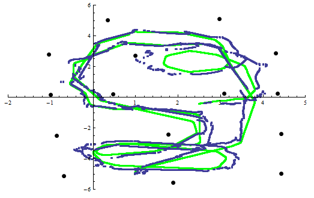
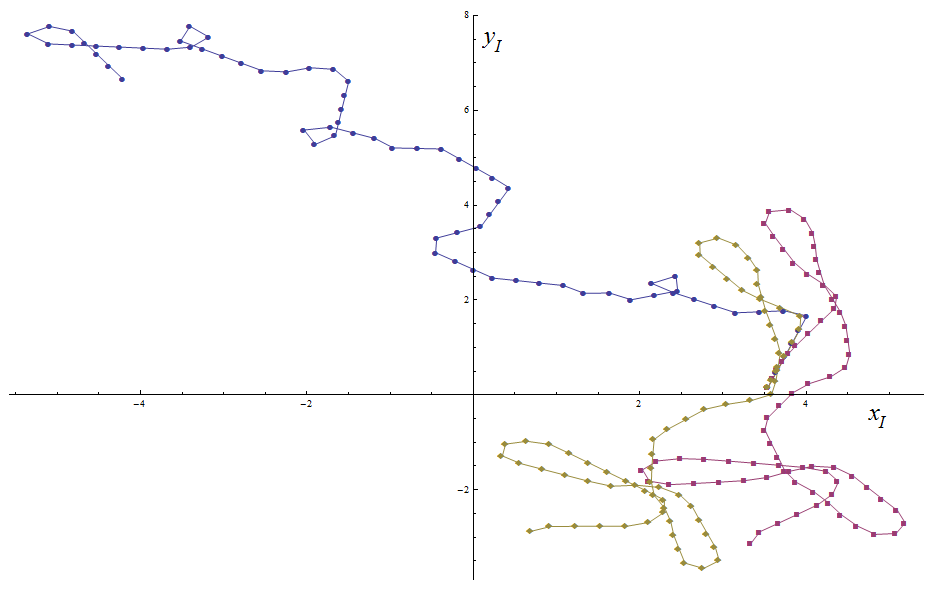

Project Overview
As a part of a graduate course on machine learning for robotics, I worked on two applied programming projects to implement an unscented Kalman filter and an artificial neural network to improve tracking performance on a mobile robot dataset.
 The full reports are available for download:
The full reports are available for download:
- The filtering project: "Implementation of the Unscented Kalman Filter with Mobile Robots"
- The neural network project:"Using Neural Networks to Improve Mobile Robot Dead-Reckoning"
Unscented Kalman Filter
The unscented Kalman filter is an extension of the Kalman filter and extended Kalman filtering algorithms. Although the extended Kalman filter was created to handle non-linear functions, for particularly non-linear problems, the extended filter can have very poor performance. The unscented version uses a method of discrete sampling, called an unscented transform, to sample a small set of points in the distribution. These points, known as sigma points, are then propagated through the non-linear function. This technique tends to have better performance than the extended filter for highly non-linear functions since the mean and variance are captured more accurately.
The dataset used in this implementation is the MRSLAM_Dataset4 for Robot3. The fleet of robots used in the dataset collection were five iRobot Create platforms which are two-wheeled, differential drive robot platforms. Each robot has an on-board monocular camera for landmark sensing.
Overall, the unscented Kalman filter has been shown to be much more successful at predicting the path of a mobile robot than odometry alone. The resulting path from the filtering algorithm has a relatively bounded error throughout the path, despite errors in the motion and measurement models. Because of the simplified version of the unscented Kalman filter, the valid noise covariances that the filter could handle were limited. Decreasing the measurement noise did cause the updates to rely more heavily on the measurements; however, the difference in overall path is minimal. An implementation of the more sophisticated localization version may increase the accuracy of the model and range of covariances that can be successfully implemented with the filter.
Neural Network
The first task was building the training data that will be used to learn a better motion model for the robot. I made the assumption that the model is independent of the robot's world position and orientation. This allowed for a lower dimensional mapping from the robot's control inputs to changes in the states in the robot's body frame. The input training set, $X$, for the algorithm consisted of the two control inputs, averaged over a predefined timestep, $dt$.
The output training set, $Y$, was the change of states in the body frame of the robot during the defined timestep. The data for this set comes from the groundtruth data from the experimental dataset which was obtained with a external Vicon camera system tracking the robot's position in the world. A backpropagation algorithm is then used to learn the weights for each layer. This is accomplished by attempting to minimize the squared error between the network's output and training output.
Overall, the neural network was shown to successfully learn an improved model for the robot's motion. The resulting dead-reckoning path has less error than the simplified model which could be used to improve other algorithms such as Kalman filtering algorithms to incorporate measurements into the system.